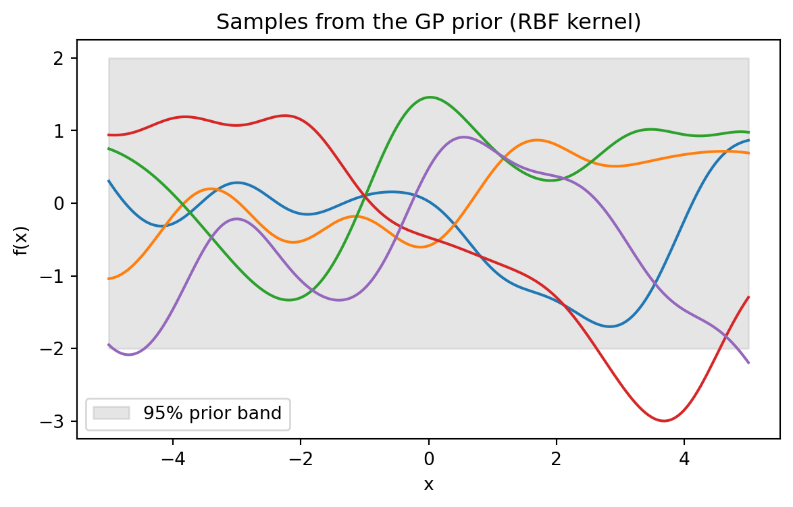
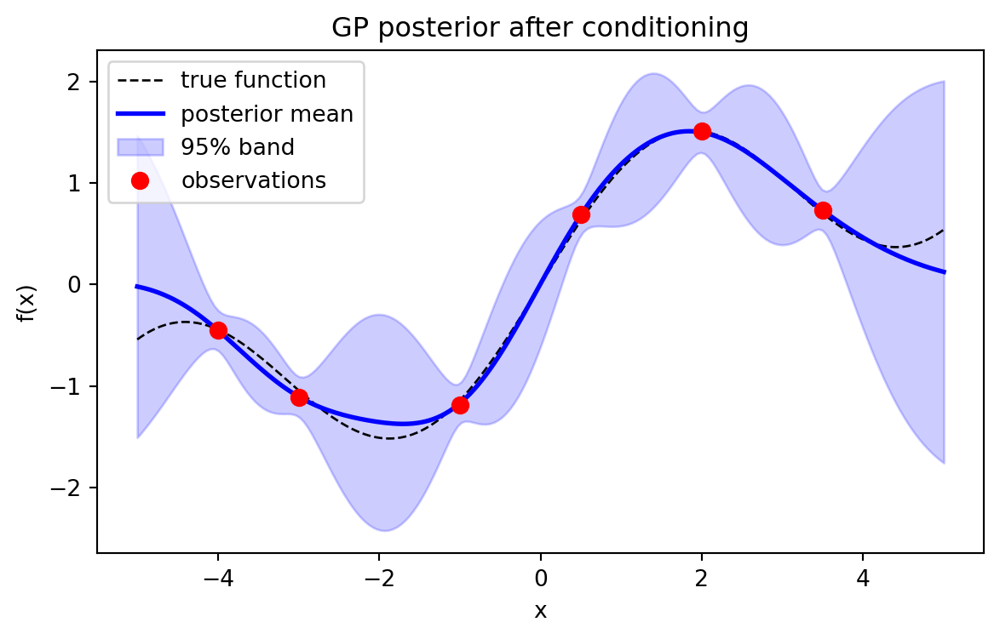

flowchart TD
A[Training inputs X and targets y] --> B[Build K_XX with chosen kernel]
B --> C[Add noise sigma_n squared I]
C --> D[Cholesky factor L L transpose]
D --> E[Solve for alpha and log marginal likelihood]
E --> F{Optimize hyperparameters}
F -->|gradient ascent on log ml| B
F -->|converged| G[Predict mean and covariance at X star]
G --> H[Posterior mean plus uncertainty band]
120 Gaussian Processes
Gaussian processes (GPs) provide a principled, fully probabilistic framework for learning unknown functions from data. Where a parametric model commits to a fixed functional form and learns a finite set of weights, a Gaussian process places a probability distribution directly over functions and lets the data sculpt that distribution. The result is a nonparametric regression method that returns not only point predictions but calibrated uncertainty, with the entire pipeline reducing to operations on Gaussian distributions. This chapter develops GPs from the ground up: the prior over functions, the covariance kernel that encodes our assumptions, the closed form posterior for regression, the learning of hyperparameters through the marginal likelihood, and the computational strategies that make GPs usable at scale.
120.1 1. From Weights to Functions
120.1.1 1.1 The Bayesian linear model as a warm up
Consider Bayesian linear regression with feature map \(\phi(\mathbf{x}) \in \mathbb{R}^M\) and weights \(\mathbf{w}\). The model is \(f(\mathbf{x}) = \phi(\mathbf{x})^\top \mathbf{w}\), with a Gaussian prior \(\mathbf{w} \sim \mathcal{N}(\mathbf{0}, \Sigma_p)\). Because \(f\) is a linear function of the Gaussian vector \(\mathbf{w}\), any finite collection of function values \(f(\mathbf{x}_1), \dots, f(\mathbf{x}_n)\) is jointly Gaussian. Its mean is zero and its covariance is
\[ \operatorname{Cov}\!\big(f(\mathbf{x}), f(\mathbf{x}')\big) = \phi(\mathbf{x})^\top \Sigma_p\, \phi(\mathbf{x}'). \]
This is the key observation. We never needed the weights explicitly. The distribution over functions is fully characterized by a mean function and a covariance function. If we define \(k(\mathbf{x}, \mathbf{x}') = \phi(\mathbf{x})^\top \Sigma_p\, \phi(\mathbf{x}')\) then the inner product can be replaced by any positive definite kernel, including kernels corresponding to infinite dimensional feature maps. That generalization is exactly the Gaussian process.
120.1.2 1.2 Definition
A Gaussian process is a collection of random variables, any finite number of which have a joint Gaussian distribution. It is completely specified by a mean function \(m(\mathbf{x})\) and a covariance function \(k(\mathbf{x}, \mathbf{x}')\):
\[ m(\mathbf{x}) = \mathbb{E}[f(\mathbf{x})], \qquad k(\mathbf{x}, \mathbf{x}') = \mathbb{E}\big[(f(\mathbf{x}) - m(\mathbf{x}))(f(\mathbf{x}') - m(\mathbf{x}'))\big], \]
and we write \(f \sim \mathcal{GP}(m, k)\). The defining consistency property is that for any finite set of inputs \(X = \{\mathbf{x}_1, \dots, \mathbf{x}_n\}\), the vector \(\mathbf{f} = (f(\mathbf{x}_1), \dots, f(\mathbf{x}_n))^\top\) is distributed as \(\mathcal{N}(\mathbf{m}_X, K_{XX})\), where \((\mathbf{m}_X)_i = m(\mathbf{x}_i)\) and \((K_{XX})_{ij} = k(\mathbf{x}_i, \mathbf{x}_j)\). A common and harmless convention is to set \(m(\mathbf{x}) = 0\) after centering the data, so that all structure lives in the kernel.
120.2 2. The GP Prior
120.2.1 2.1 Sampling functions
Before seeing any data, a GP is a prior belief about which functions are plausible. To visualize this we choose a grid of test inputs \(X_\ast\), form the prior covariance matrix \(K_{\ast\ast}\), and draw samples from \(\mathcal{N}(\mathbf{0}, K_{\ast\ast})\).
# Pseudocode: draw sample functions from a GP prior
K = kernel(X_star, X_star) # n_star x n_star covariance
L = cholesky(K + 1e-9 * I) # jitter for numerical stability
for s in range(num_samples):
u = normal(size=n_star) # standard normal vector
f_sample = L @ u # a sample function on the gridEach draw is a vector of correlated function values. The kernel controls how strongly nearby inputs are correlated, and therefore how smooth and how wiggly the sampled functions look. The prior does not pick out a single function. It assigns probability mass across a whole space of functions, and that mass is what gets reshaped by observations.
120.2.2 2.2 Kernels encode assumptions
The covariance function is where modeling happens. It must be symmetric and positive semidefinite, meaning \(K_{XX}\) is a valid covariance matrix for every finite \(X\). The most widely used kernel is the squared exponential, also called the radial basis function or RBF kernel:
\[ k_{\mathrm{SE}}(\mathbf{x}, \mathbf{x}') = \sigma_f^2 \exp\!\left(-\frac{\lVert \mathbf{x} - \mathbf{x}' \rVert^2}{2\ell^2}\right). \]
Here \(\sigma_f^2\) is the signal variance, controlling the vertical scale of functions, and \(\ell\) is the length scale, controlling how rapidly the function can vary. A short length scale yields wiggly functions, a long one yields nearly flat functions. The squared exponential produces infinitely differentiable sample paths, which is sometimes too smooth for real phenomena.
The Matern family relaxes that assumption with a smoothness parameter \(\nu\). For \(\nu = 3/2\),
\[ k_{3/2}(r) = \sigma_f^2\left(1 + \frac{\sqrt{3}\,r}{\ell}\right)\exp\!\left(-\frac{\sqrt{3}\,r}{\ell}\right), \qquad r = \lVert \mathbf{x} - \mathbf{x}' \rVert, \]
which gives once differentiable paths that are often more realistic. Other building blocks include the periodic kernel for repeating structure, the linear kernel for trends, and the rational quadratic kernel for a mixture of length scales. Kernels are closed under addition and multiplication, so complex structure can be composed. A sum models additive components, such as a slow trend plus a seasonal pattern, while a product couples them, such as a periodic pattern whose amplitude decays.
120.2.3 2.3 Automatic relevance determination
For multivariate inputs, assigning a separate length scale to each dimension yields
\[ k(\mathbf{x}, \mathbf{x}') = \sigma_f^2 \exp\!\left(-\frac{1}{2}\sum_{d=1}^{D} \frac{(x_d - x_d')^2}{\ell_d^2}\right). \]
When a learned length scale \(\ell_d\) becomes very large, the kernel becomes nearly constant along dimension \(d\), effectively switching that feature off. This is automatic relevance determination, and it lets the marginal likelihood perform soft feature selection during hyperparameter learning.
120.3 3. GP Regression: The Posterior
120.3.1 3.1 The observation model
Assume we observe targets corrupted by independent Gaussian noise:
\[ y_i = f(\mathbf{x}_i) + \varepsilon_i, \qquad \varepsilon_i \sim \mathcal{N}(0, \sigma_n^2). \]
Stacking observations, \(\mathbf{y} = \mathbf{f} + \boldsymbol{\varepsilon}\) with \(\boldsymbol{\varepsilon} \sim \mathcal{N}(\mathbf{0}, \sigma_n^2 I)\). The prior on training latent values is \(\mathbf{f} \sim \mathcal{N}(\mathbf{0}, K_{XX})\), so the marginal distribution of the observed targets is \(\mathbf{y} \sim \mathcal{N}(\mathbf{0}, K_{XX} + \sigma_n^2 I)\).
120.3.2 3.2 The joint and the conditional
Let \(X_\ast\) denote test inputs and \(\mathbf{f}_\ast = f(X_\ast)\) the latent test values. By the GP definition, the training targets and test latents are jointly Gaussian:
\[ \begin{bmatrix} \mathbf{y} \\ \mathbf{f}_\ast \end{bmatrix} \sim \mathcal{N}\!\left( \mathbf{0}, \begin{bmatrix} K_{XX} + \sigma_n^2 I & K_{X\ast} \\ K_{\ast X} & K_{\ast\ast} \end{bmatrix} \right). \]
The standard formula for conditioning a joint Gaussian gives the posterior predictive distribution \(\mathbf{f}_\ast \mid X, \mathbf{y}, X_\ast \sim \mathcal{N}(\bar{\mathbf{f}}_\ast, \operatorname{cov}(\mathbf{f}_\ast))\) with
\[ \bar{\mathbf{f}}_\ast = K_{\ast X}\,(K_{XX} + \sigma_n^2 I)^{-1}\,\mathbf{y}, \]
\[ \operatorname{cov}(\mathbf{f}_\ast) = K_{\ast\ast} - K_{\ast X}\,(K_{XX} + \sigma_n^2 I)^{-1}\,K_{X\ast}. \]
These two equations are the heart of GP regression. The predictive mean is a linear combination of the observed targets, weighted by how the test points correlate with the training points. The predictive covariance starts from the prior covariance \(K_{\ast\ast}\) and subtracts the information contributed by the data. Notice that the variance reduction term does not depend on the observed \(\mathbf{y}\) at all, only on where we observed. Uncertainty shrinks near data and grows back toward the prior far from data, which is exactly the behavior we want from a calibrated model.
120.3.3 3.3 The weight space view of the mean
Writing \(\boldsymbol{\alpha} = (K_{XX} + \sigma_n^2 I)^{-1}\mathbf{y}\), the predictive mean becomes
\[ \bar{f}(\mathbf{x}_\ast) = \sum_{i=1}^{n} \alpha_i\, k(\mathbf{x}_\ast, \mathbf{x}_i). \]
The prediction is a weighted sum of kernel functions centered at the training points. This is the representer theorem in action and connects GP regression to kernel ridge regression, whose solution coincides exactly with the GP posterior mean. The probabilistic framing adds the variance, which kernel ridge regression lacks.
120.3.4 3.4 A worked scalar example
Take the smallest nontrivial case with a single training point. Let \(k_{xx} = k(\mathbf{x}_1, \mathbf{x}_1)\), \(k_{\ast x} = k(\mathbf{x}_\ast, \mathbf{x}_1)\), and \(k_{\ast\ast} = k(\mathbf{x}_\ast, \mathbf{x}_\ast)\). The \(2 \times 2\) joint covariance is
\[ \begin{bmatrix} y \\ f_\ast \end{bmatrix} \sim \mathcal{N}\!\left( 0, \begin{bmatrix} k_{xx} + \sigma_n^2 & k_{\ast x} \\ k_{\ast x} & k_{\ast\ast} \end{bmatrix} \right). \]
Applying the Schur complement to this scalar block yields the posterior in closed form,
\[ \bar{f}_\ast = \frac{k_{\ast x}}{k_{xx} + \sigma_n^2}\, y, \qquad \operatorname{var}(f_\ast) = k_{\ast\ast} - \frac{k_{\ast x}^2}{k_{xx} + \sigma_n^2}. \]
The mean is the observation \(y\) shrunk by the correlation ratio between test and training point, and the variance is the prior variance minus the explained portion. The executable cell below confirms these expressions agree with the full matrix code to machine precision using SymPy.
120.3.5 3.5 A practical recipe
Direct inversion is numerically fragile. The stable implementation uses the Cholesky factorization of the symmetric positive definite matrix \(K_{XX} + \sigma_n^2 I = LL^\top\).
# Pseudocode: stable GP regression (Rasmussen and Williams, Algorithm 2.1)
L = cholesky(K + sigma_n2 * I) # lower triangular factor
alpha = solve_triangular(L.T, solve_triangular(L, y))
f_mean = K_star_X @ alpha # predictive mean
v = solve_triangular(L, K_X_star) # for the variance
f_var = K_star_star - v.T @ v # predictive covariance
log_ml = -0.5 * y @ alpha - sum(log(diag(L))) - 0.5 * n * log(2 * pi)Solving two triangular systems is far cheaper and more stable than forming an explicit inverse, and the same factor \(L\) yields the marginal likelihood used for learning.
120.4 4. Hyperparameter Learning via Marginal Likelihood
120.4.1 4.1 The marginal likelihood objective
The kernel carries hyperparameters \(\boldsymbol{\theta}\), such as \(\ell\), \(\sigma_f^2\), and the noise variance \(\sigma_n^2\). Rather than cross validating over a grid, GPs learn these by maximizing the log marginal likelihood, obtained by integrating out the latent function:
\[ \log p(\mathbf{y} \mid X, \boldsymbol{\theta}) = -\frac{1}{2}\mathbf{y}^\top K_y^{-1}\mathbf{y} - \frac{1}{2}\log\lvert K_y \rvert - \frac{n}{2}\log 2\pi, \]
where \(K_y = K_{XX} + \sigma_n^2 I\). This quantity is also called the evidence. It is the probability of the observed data under the model with the latent function marginalized away, which is precisely what a Bayesian model selection criterion should be.
120.4.2 4.2 The automatic Occam balance
The three terms have clean interpretations. The data fit term \(-\tfrac{1}{2}\mathbf{y}^\top K_y^{-1}\mathbf{y}\) rewards kernels that explain the targets well, which pushes toward flexible models with short length scales. The complexity penalty \(-\tfrac{1}{2}\log\lvert K_y \rvert\) punishes models that can fit too many possible datasets, which pushes toward smoother, simpler models. The final term is a normalizing constant. Maximizing their sum trades fit against complexity automatically, embodying Occam’s razor without any held out validation set. This is one of the most attractive properties of the GP framework.
120.4.3 4.3 Gradients and optimization
The objective is differentiable in \(\boldsymbol{\theta}\). Using \(K_y^{-1}\) and \(\boldsymbol{\alpha} = K_y^{-1}\mathbf{y}\), the gradient with respect to a hyperparameter \(\theta_j\) is
\[ \frac{\partial}{\partial \theta_j}\log p(\mathbf{y}\mid X, \boldsymbol{\theta}) = \frac{1}{2}\operatorname{tr}\!\left((\boldsymbol{\alpha}\boldsymbol{\alpha}^\top - K_y^{-1})\frac{\partial K_y}{\partial \theta_j}\right). \]
These gradients feed a gradient based optimizer such as L-BFGS. The marginal likelihood is generally nonconvex, so multiple restarts from different initial length scales are advisable to avoid poor local optima. Positivity constraints on \(\ell\), \(\sigma_f^2\), and \(\sigma_n^2\) are usually enforced by optimizing in the log domain.
120.4.4 4.4 Beyond point estimates
Maximizing the marginal likelihood gives a point estimate of \(\boldsymbol{\theta}\), which can overfit when data are scarce. A fully Bayesian treatment places a prior on \(\boldsymbol{\theta}\) and integrates over it, typically with Markov chain Monte Carlo such as Hamiltonian Monte Carlo or the No-U-Turn sampler. This propagates hyperparameter uncertainty into the predictions at the cost of much heavier computation. In practice marginal likelihood maximization is the default, with sampling reserved for small data settings where calibration matters most.
120.5 5. Scalability
120.5.1 5.1 The cubic bottleneck
The Cholesky factorization of an \(n \times n\) matrix costs \(O(n^3)\) time and the matrix itself costs \(O(n^2)\) memory. For a few thousand points this is fine on a laptop. Beyond roughly \(10^4\) points the exact GP becomes impractical, and this scaling is the central obstacle to applying GPs to modern datasets. The whole field of scalable GPs exists to break this barrier.
120.5.2 5.2 Sparse and inducing point methods
The dominant family of approximations summarizes the dataset with a small set of \(m \ll n\) inducing points \(Z\). The latent function at the inducing locations, \(\mathbf{u} = f(Z)\), acts as a sufficient statistic that the rest of the function depends on. Methods such as the fully independent training conditional and the variational free energy approach of Titsias reduce the cost to \(O(nm^2)\) time and \(O(nm)\) memory. The variational formulation is especially clean: it minimizes a Kullback-Leibler divergence to the exact posterior and jointly optimizes the inducing locations and the kernel hyperparameters through a single lower bound on the marginal likelihood.
120.5.3 5.3 Stochastic variational and deep approaches
Hensman and colleagues reformulated the variational bound so that it decomposes as a sum over data points. This allows minibatch training with stochastic gradient descent, pushing GPs to millions of observations and enabling non Gaussian likelihoods for classification and count data. Stacking GP layers gives deep Gaussian processes, which model functions whose smoothness varies across the input space, at the cost of approximate inference within and across layers.
120.5.4 5.4 Structure exploiting and iterative methods
A complementary route avoids approximation and instead exploits structure. When inputs lie on a grid with a separable kernel, \(K_{XX}\) has Kronecker or Toeplitz structure that enables fast exact solves. Structured kernel interpolation extends this idea to off grid data by interpolating onto a latent grid. More generally, iterative solvers based on conjugate gradients reduce GP inference to repeated matrix vector products with \(K_{XX}\). Combined with GPU acceleration and preconditioning, as in the GPyTorch library, this scales exact GPs to tens of thousands of points and integrates naturally with automatic differentiation for the marginal likelihood gradients.
120.5.5 5.5 Choosing an approach
The right tool depends on the regime. For up to a few thousand points, exact GP regression with Cholesky is simplest and best calibrated. For tens of thousands, iterative conjugate gradient methods on a GPU keep inference exact. For hundreds of thousands or more, or for non Gaussian likelihoods, stochastic variational inducing point methods are the standard choice. Gridded or spatial data should exploit Kronecker or interpolation structure. In every case the modeling decisions, especially the kernel, matter more than the inference engine, since a misspecified kernel will produce confident and wrong predictions no matter how exactly the posterior is computed.
120.6 6. Computation in Practice
The flow from kernel to calibrated prediction is a short pipeline of Gaussian operations.
120.6.1 6.1 Executable example
The following cell draws prior samples, conditions on six noisy observations, sweeps kernel hyperparameters against the marginal likelihood, and verifies the scalar posterior formula symbolically.
Code
import numpy as np
import pandas as pd
import sympy as sp
import matplotlib.pyplot as plt
rng = np.random.default_rng(42)
def rbf_kernel(X1, X2, length_scale=1.0, signal_var=1.0):
X1 = np.atleast_2d(X1).reshape(-1, 1)
X2 = np.atleast_2d(X2).reshape(-1, 1)
sqdist = (X1 - X2.T) ** 2
return signal_var * np.exp(-0.5 * sqdist / length_scale ** 2)
# Prior samples on a grid
Xs = np.linspace(-5, 5, 200)
Kss = rbf_kernel(Xs, Xs, length_scale=1.0, signal_var=1.0)
Lp = np.linalg.cholesky(Kss + 1e-9 * np.eye(len(Xs)))
prior_samples = Lp @ rng.standard_normal((len(Xs), 5))
fig1, ax1 = plt.subplots(figsize=(7, 4))
for i in range(5):
ax1.plot(Xs, prior_samples[:, i], lw=1.5)
ax1.fill_between(Xs, -2 * np.sqrt(np.diag(Kss)), 2 * np.sqrt(np.diag(Kss)),
color="gray", alpha=0.2, label="95% prior band")
ax1.set_title("Samples from the GP prior (RBF kernel)")
ax1.set_xlabel("x"); ax1.set_ylabel("f(x)"); ax1.legend()
plt.show()
# Condition on noisy observations
def f_true(x):
return np.sin(x) + 0.3 * x
Xtr = np.array([-4.0, -3.0, -1.0, 0.5, 2.0, 3.5])
sigma_n = 0.1
ytr = f_true(Xtr) + sigma_n * rng.standard_normal(len(Xtr))
def gp_posterior(Xtr, ytr, Xs, length_scale, signal_var, sigma_n):
K = rbf_kernel(Xtr, Xtr, length_scale, signal_var) + sigma_n ** 2 * np.eye(len(Xtr))
Ks = rbf_kernel(Xtr, Xs, length_scale, signal_var)
Kss = rbf_kernel(Xs, Xs, length_scale, signal_var)
L = np.linalg.cholesky(K)
alpha = np.linalg.solve(L.T, np.linalg.solve(L, ytr))
mean = Ks.T @ alpha
v = np.linalg.solve(L, Ks)
cov = Kss - v.T @ v
log_ml = (-0.5 * ytr @ alpha - np.sum(np.log(np.diag(L)))
- 0.5 * len(Xtr) * np.log(2 * np.pi))
return mean, cov, log_ml
mean, cov, _ = gp_posterior(Xtr, ytr, Xs, 1.0, 1.0, sigma_n)
std = np.sqrt(np.clip(np.diag(cov), 0, None))
fig2, ax2 = plt.subplots(figsize=(7, 4))
ax2.plot(Xs, f_true(Xs), "k--", lw=1, label="true function")
ax2.plot(Xs, mean, "b", lw=2, label="posterior mean")
ax2.fill_between(Xs, mean - 2 * std, mean + 2 * std, color="b", alpha=0.2,
label="95% band")
ax2.plot(Xtr, ytr, "ro", ms=7, label="observations")
ax2.set_title("GP posterior after conditioning")
ax2.set_xlabel("x"); ax2.set_ylabel("f(x)"); ax2.legend()
plt.show()
# Hyperparameter sweep against the marginal likelihood
rows = []
for ls in [0.2, 0.5, 1.0, 2.0, 4.0]:
for sv in [0.5, 1.0, 2.0]:
_, _, lml = gp_posterior(Xtr, ytr, Xs, ls, sv, sigma_n)
rows.append({"length_scale": ls, "signal_var": sv,
"log_marginal_likelihood": round(lml, 3)})
df = pd.DataFrame(rows)
best = df.loc[df["log_marginal_likelihood"].idxmax()]
print("Hyperparameter sweep (RBF):")
print(df.to_string(index=False))
print(f"\nBest: length_scale={best.length_scale}, signal_var={best.signal_var}, "
f"log_ml={best.log_marginal_likelihood}")
# Symbolic check of the scalar posterior via the Schur complement
kxx, ksx, kss, sn2, y = sp.symbols("k_xx k_sx k_ss sigma_n2 y", real=True)
Ky = kxx + sn2
post_mean = ksx * (1 / Ky) * y
post_var = kss - ksx * (1 / Ky) * ksx
print("\nSymbolic scalar posterior (Schur complement):")
print(" mean =", sp.simplify(post_mean))
print(" var =", sp.simplify(post_var))
xt, xq, ls, sv, yt = 0.0, 1.0, 1.0, 1.0, 0.7
ksx_n = sv * np.exp(-0.5 * (xt - xq) ** 2 / ls ** 2)
sym_mean = float(post_mean.subs({ksx: ksx_n, kxx: sv, sn2: sigma_n ** 2, y: yt}))
sym_var = float(post_var.subs({ksx: ksx_n, kss: sv, kxx: sv, sn2: sigma_n ** 2}))
m_n, c_n, _ = gp_posterior(np.array([xt]), np.array([yt]), np.array([xq]), ls, sv, sigma_n)
print(f"\nClosed-form mean {sym_mean:.6f} vs numeric {m_n[0]:.6f}")
print(f"Closed-form var {sym_var:.6f} vs numeric {c_n[0, 0]:.6f}")
print("Agreement:", np.isclose(sym_mean, m_n[0]) and np.isclose(sym_var, c_n[0, 0]))

Hyperparameter sweep (RBF):
length_scale signal_var log_marginal_likelihood
0.2 0.5 -9.512
0.2 1.0 -8.582
0.2 2.0 -9.135
0.5 0.5 -9.367
0.5 1.0 -8.504
0.5 2.0 -9.091
1.0 0.5 -8.149
1.0 1.0 -7.684
1.0 2.0 -8.473
2.0 0.5 -7.876
2.0 1.0 -6.248
2.0 2.0 -6.351
4.0 0.5 -55.532
4.0 1.0 -39.985
4.0 2.0 -27.459
Best: length_scale=2.0, signal_var=1.0, log_ml=-6.248
Symbolic scalar posterior (Schur complement):
mean = k_sx*y/(k_xx + sigma_n2)
var = (k_ss*(k_xx + sigma_n2) - k_sx**2)/(k_xx + sigma_n2)
Closed-form mean 0.420368 vs numeric 0.420368
Closed-form var 0.635763 vs numeric 0.635763
Agreement: TrueThe sweep shows the marginal likelihood peaking at an intermediate length scale, with the over smooth setting punished heavily by the data fit term. The symbolic and numeric posteriors agree exactly, confirming the conditioning algebra.
120.6.2 6.2 The same model in three languages
Code
import numpy as np
def rbf(a, b, ls=1.0, sv=1.0):
d2 = (a[:, None] - b[None, :]) ** 2
return sv * np.exp(-0.5 * d2 / ls ** 2)
Xtr = np.array([-2.0, 0.0, 1.5]); ytr = np.array([-0.5, 0.2, 0.9])
Xs = np.array([0.5]); sn = 0.1
K = rbf(Xtr, Xtr) + sn ** 2 * np.eye(3)
L = np.linalg.cholesky(K)
alpha = np.linalg.solve(L.T, np.linalg.solve(L, ytr))
ks = rbf(Xs, Xtr)
print("posterior mean:", float(ks @ alpha))posterior mean: 0.5020959756681703C:\Users\miken\AppData\Local\Temp\ipykernel_14308\2262853322.py:13: DeprecationWarning:
Conversion of an array with ndim > 0 to a scalar is deprecated, and will error in future. Ensure you extract a single element from your array before performing this operation. (Deprecated NumPy 1.25.)
using LinearAlgebra
rbf(a, b; ls=1.0, sv=1.0) = sv .* exp.(-0.5 .* (a .- b').^2 ./ ls^2)
Xtr = [-2.0, 0.0, 1.5]; ytr = [-0.5, 0.2, 0.9]
Xs = [0.5]; sn = 0.1
K = rbf(Xtr, Xtr) + sn^2 * I
L = cholesky(K).L
alpha = L' \ (L \ ytr)
ks = rbf(Xs, Xtr)
println("posterior mean: ", (ks * alpha)[1])// Single test point GP mean with a 3 by 3 training kernel.
// Uses a small dense solve via Gaussian elimination.
fn rbf(a: f64, b: f64, ls: f64, sv: f64) -> f64 {
sv * (-0.5 * (a - b).powi(2) / (ls * ls)).exp()
}
fn main() {
let xtr = [-2.0, 0.0, 1.5];
let ytr = [-0.5, 0.2, 0.9];
let xs = 0.5;
let sn2 = 0.01_f64;
// Build K + noise.
let mut k = [[0.0_f64; 3]; 3];
for i in 0..3 {
for j in 0..3 {
k[i][j] = rbf(xtr[i], xtr[j], 1.0, 1.0)
+ if i == j { sn2 } else { 0.0 };
}
}
// Solve K alpha = y by Gaussian elimination.
let mut a = k;
let mut b = ytr;
for c in 0..3 {
let piv = a[c][c];
for r in (c + 1)..3 {
let f = a[r][c] / piv;
for col in 0..3 { a[r][col] -= f * a[c][col]; }
b[r] -= f * b[c];
}
}
let mut alpha = [0.0_f64; 3];
for r in (0..3).rev() {
let mut s = b[r];
for col in (r + 1)..3 { s -= a[r][col] * alpha[col]; }
alpha[r] = s / a[r][r];
}
let mut mean = 0.0;
for i in 0..3 { mean += rbf(xs, xtr[i], 1.0, 1.0) * alpha[i]; }
println!("posterior mean: {mean}");
}120.7 7. Why Gaussian Processes Matter
Gaussian processes occupy a distinctive place in machine learning. They are nonparametric, so model capacity grows gracefully with data. They are probabilistic, so every prediction comes with calibrated uncertainty that downstream decisions can use. They are interpretable, since the kernel exposes our smoothness, periodicity, and relevance assumptions explicitly. And they support principled model selection through the marginal likelihood, with no validation set required. These properties make GPs the workhorse of Bayesian optimization, where the uncertainty drives where to sample next, and of spatial statistics, active learning, and surrogate modeling for expensive simulations. The cost is computational, but the toolkit of sparse, variational, and iterative methods has steadily widened the range of problems where GPs are not only elegant but practical.
120.8 References
- Rasmussen, C. E., and Williams, C. K. I. Gaussian Processes for Machine Learning. MIT Press, 2006. https://gaussianprocess.org/gpml/
- Titsias, M. K. Variational Learning of Inducing Variables in Sparse Gaussian Processes. AISTATS, 2009. https://proceedings.mlr.press/v5/titsias09a.html
- Hensman, J., Fusi, N., and Lawrence, N. D. Gaussian Processes for Big Data. UAI, 2013. https://arxiv.org/abs/1309.6835
- Quinonero-Candela, J., and Rasmussen, C. E. A Unifying View of Sparse Approximate Gaussian Process Regression. JMLR, 2005. https://www.jmlr.org/papers/v6/quinonero-candela05a.html
- Wilson, A. G., and Nickisch, H. Kernel Interpolation for Scalable Structured Gaussian Processes (KISS-GP). ICML, 2015. https://arxiv.org/abs/1503.01057
- Gardner, J., Pleiss, G., Weinberger, K. Q., Bindel, D., and Wilson, A. G. GPyTorch: Blackbox Matrix-Matrix Gaussian Process Inference with GPU Acceleration. NeurIPS, 2018. https://arxiv.org/abs/1809.11165
- Damianou, A., and Lawrence, N. D. Deep Gaussian Processes. AISTATS, 2013. https://proceedings.mlr.press/v31/damianou13a.html
- Duvenaud, D. Automatic Model Construction with Gaussian Processes. PhD thesis, University of Cambridge, 2014. https://www.cs.toronto.edu/~duvenaud/thesis.pdf